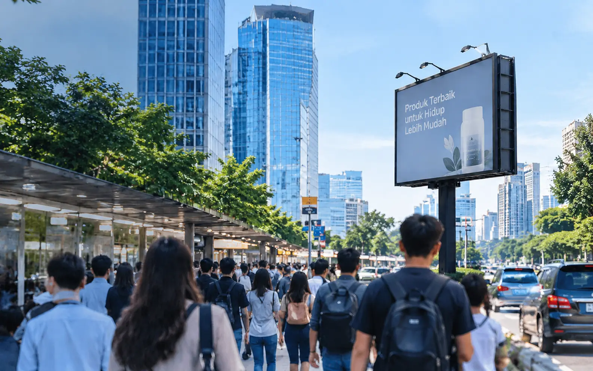
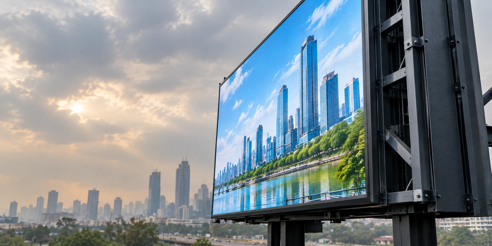

Informasi Kurang Terlihat
Media promosi konvensional memiliki keterbatasan dalam menarik perhatian audiens, terutama di area ramai dan lokasi dengan jarak pandang yang jauh.

Cahaya Mustika Indonesia menyediakan videotron outdoor dan LED display berkualitas untuk media promosi digital, penyampaian informasi, bisnis, dan event. Tersedia berbagai pilihan ukuran dan spesifikasi yang dapat disesuaikan dengan kebutuhan visual Anda, dengan layanan pengiriman ke seluruh Jakarta dan sekitarnya.

Media promosi konvensional memiliki keterbatasan dalam menarik perhatian audiens, terutama di area ramai dan lokasi dengan jarak pandang yang jauh.

Perangkat display yang dipasang di luar ruangan harus mampu menghadapi paparan sinar matahari, hujan, debu, dan perubahan cuaca.

Penggunaan media promosi statis membutuhkan proses penggantian materi secara berkala, sehingga pembaruan informasi menjadi kurang praktis.
Videotron outdoor kami dirancang untuk menghadirkan tampilan visual yang jelas, tahan terhadap berbagai kondisi cuaca, dan mendukung kebutuhan promosi serta penyampaian informasi secara optimal.
Teknologi LED berkualitas tinggi dengan tingkat kecerahan optimal memastikan konten promosi dan informasi terlihat jelas, bahkan di bawah sinar matahari langsung.
Dirancang untuk penggunaan luar ruangan dengan perlindungan terhadap hujan, debu, panas, dan perubahan cuaca sehingga mendukung penggunaan jangka panjang.
Memudahkan pembaruan konten digital untuk kebutuhan promosi, informasi, dan komunikasi visual secara praktis sesuai kebutuhan bisnis Anda.

Pilih dari koleksi videotron outdoor berkualitas untuk kebutuhan media promosi, penyampaian informasi, dan tampilan visual digital di berbagai lokasi.

Videotron outdoor LG untuk kebutuhan advertising, commercial display, event, dan berbagai kebutuhan visual outdoor.
Lihat Detail →
Solusi outdoor LED display Samsung untuk kebutuhan advertising, informasi, event, dan berbagai kebutuhan visual profesional.
Lihat Detail →
Outdoor LED display Hikvision untuk kebutuhan advertising, commercial area, event, dan berbagai kebutuhan visual outdoor.
Lihat Detail →Nikmati berbagai keunggulan videotron outdoor untuk kebutuhan promosi, penyampaian informasi, dan media visual digital yang optimal.

Teknologi LED menghadirkan tampilan visual yang cerah, tajam, dan menarik untuk mendukung penyampaian informasi serta promosi di area luar ruangan.

Dirancang untuk kebutuhan luar ruangan dengan perlindungan terhadap paparan sinar matahari, debu, dan hujan sesuai spesifikasi produk.

Pemasangan Profesional
Mendukung kebutuhan instalasi videotron outdoor untuk berbagai lokasi seperti gedung, area komersial, pusat perbelanjaan, dan ruang publik.

Kami siap membantu kebutuhan videotron outdoor mulai dari konsultasi pemilihan produk hingga informasi pemasangan sesuai kebutuhan proyek Anda.

Tersedia berbagai pilihan ukuran dan konfigurasi layar yang dapat disesuaikan dengan kebutuhan promosi, lokasi pemasangan, serta jarak pandang audiens.

Dapatkan informasi harga dan rekomendasi produk sesuai kebutuhan proyek, spesifikasi teknis, ukuran layar, serta anggaran yang tersedia.
Baca artikel kami untuk panduan memilih videotron outdoor, merawat perangkat agar awet, dan tips mengoptimalkan tampilan visual untuk kebutuhan bisnis Anda.

Tips Memilih Videotron Outdoor Sesuai Kebutuhan Bisnis
Ketahui kriteria yang perlu diperhatikan saat memilih videotron outdoor, mulai dari ukuran layar, resolusi, tingkat kecerahan, hingga lokasi pemasangan yang tepat.
Baca Selengkapnya
Cara Merawat Videotron Outdoor Agar Awet dan Optimal
Panduan merawat videotron outdoor agar tetap berfungsi dengan baik, termasuk pembersihan layar, pemeriksaan komponen, dan perlindungan dari kondisi cuaca ekstrem.
Baca Selengkapnya
Perbandingan Videotron LG, Samsung & Hikvision
Kenali karakteristik dan pilihan produk videotron outdoor dari LG, Samsung, dan Hikvision untuk membantu menentukan perangkat yang sesuai dengan kebutuhan proyek Anda.
Baca SelengkapnyaJawaban atas pertanyaan yang paling sering diajukan tentang produk, pengiriman, pemasangan, dan layanan videotron outdoor kami.
Harga videotron outdoor bervariasi tergantung ukuran layar, pixel pitch, tingkat kecerahan, spesifikasi teknis, dan kebutuhan pemasangan. Hubungi tim kami untuk mendapatkan penawaran harga sesuai kebutuhan proyek Anda.
Kami melayani konsultasi kebutuhan videotron outdoor untuk wilayah Jakarta dan sekitarnya, termasuk Jakarta Selatan, Utara, Timur, Barat, dan Pusat. Pengiriman serta layanan pemasangan dapat dikonsultasikan sesuai lokasi dan kebutuhan proyek.
Ukuran dan konfigurasi videotron dapat disesuaikan dengan kebutuhan proyek serta ketersediaan produk. Silakan konsultasikan ukuran layar, lokasi pemasangan, dan kebutuhan tampilan Anda dengan tim kami.
Garansi produk mengikuti ketentuan resmi dari masing-masing brand dan tipe perangkat. Informasi mengenai durasi, cakupan garansi, serta layanan purna jual dapat dikonfirmasi kepada tim kami sebelum pemesanan.
Hubungi tim kami melalui WhatsApp, telepon, atau formulir kontak untuk konsultasi kebutuhan. Tim kami akan membantu memberikan informasi produk, spesifikasi, estimasi harga, dan proses pemesanan sesuai kebutuhan proyek Anda.
Ya, Anda dapat berkonsultasi terlebih dahulu mengenai pilihan produk, ukuran layar, spesifikasi teknis, lokasi pemasangan, dan kebutuhan anggaran. Tim kami siap membantu memberikan informasi sebelum Anda menentukan pilihan.
Dapatkan konsultasi gratis dan penawaran terbaik untuk kebutuhan videotron outdoor Anda. Hubungi tim kami dan temukan solusi display digital yang sesuai untuk berbagai kebutuhan bisnis dan promosi.